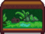
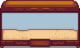
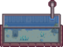

Fish Tank
This page or section contains unmarked spoilers from update 1.6 of Stardew Valley. Players may want to avoid or be cautious toward reading this article/section. |
- For the Fish Tank Bundles, see Bundles#Fish Tank.
Fish Tanks are furniture items. There are different sizes of fish tanks that can house different numbers of items.
Use
Certain items can be added to the fish tank to change its appearance by holding the item and right-clicking on the tank. To get a list of the items inside or to remove them, right-click on the tank with empty hands. The location and appearance of the decorations and any stationary animals placed inside is random and can be changed without removing items by picking up and re-placing the tank.
Allowed Contents
Fish tanks are allowed to have the following contents:
| Category | Count | Items | |
|---|---|---|---|
| Decorations | Small/Modern: 1 Others: 1 of each type |
||
| Bottom Creatures | Limited amount, depending on type of fish tank | Moving: |
Stationary: |
| Swimming Creatures | Limited amount, depending on type of fish tank | ||
Types
There are 7 types of fish tanks. The Small Fish Tank, Modern Fish Tank, Large Fish Tank, and Deluxe Fish Tank are available from the Furniture Catalogue and the Deluxe Fish Tank is available in Willy's shop only after completing the Tropical Fish special order. The Jungle Tank is only available from the Raccoon after its 5th request. The Community Center Fish Tank is only available after the Fish Tank bundles are completed (which turns the broken fish tank into a working fish tank) and cannot be obtained in any other way, nor can it be picked up to change the location or appearance of static decor placed in it. The Aquatic Sanctuary is only available from Qi's Walnut Room and cannot be found in the Furniture Catalogue.
| Item | Allowed amount of bottom creatures | Allowed amount of swimming creatures | Furniture size | |||
|---|---|---|---|---|---|---|
| N/A | 1 | 1 | 2 | |||
| N/A | N/A | 1 | 1 | 2 | ||
| N/A | 3 | 3 | 4 | |||
|  Jungle Tank | N/A | N/A | N/A | 4 | 3 | 4 |
|  Deluxe Fish Tank | N/A | 4 | 4 | 5 | ||
|  Community Center Fish Tank | N/A | N/A | N/A | 5 | 5 | 6 |
| N/A | N/A | 6 | 6 | 7 |
Animations
Most of the swimming creatures either move around without animating (e.g., Pufferfish, Octopus) or move their tails / rear parts of their bodies at various speeds while swimming. However, some of the swimming creatures have unique animations:
- Eels and Lava Eels undulate up and down like a dolphin or whale (rather than side to side like an eel or other fish).
- Squids and Midnight Squids push with their tentacles much like the Blue Squid found in the mines with the Shrine of Challenge active.
- Stingrays flip their fins up and down as well as moving their tails.
For the bottom creatures, Frogs have unique animations for hopping around and inflating their vocal sacs.
Secret
| Details |
|---|
| It's possible to place a hat on a Sea Urchin in any fish tank by selecting the hat and right-clicking on the tank. |
History
- 1.5: Introduced.
- 1.6: Can now add Anchors, Treasure Chests, Pearls, and Frog Eggs to Fish Tanks. Added Jungle Tank and Community Center Fish Tank.
- 1.6.4: Can now add Pineapples, Ancient Swords, Hardwood, Nautilus Shells, Rainbow Shells, Joja Cola, Lucky Purple Shorts, and Clay to Fish Tanks.